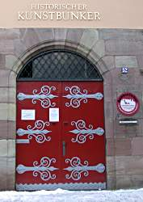

| In English |
| In English |
Historischer Kunstbunker
Touristische Informationen:
| Ort: |
In der Nürnberger Altstadt, unterhalb der Burg, eine Schritte vom Dürerhaus.
Obere Schmiedgasse 52, 90403 Nürnberg
Treffpunkt: Brauereiladen, Bergstr. 19. |
| Öffnungszeiten: |
Ganzjährig täglich 14. Gruppenführung nach Vereinbarung. [2008] |
| Eintrittspreise: |
Erwachsene EUR 4.50, Kinder (0-10) frei, Senioren EUR 3.50, Schüler EUR 3.50, Studenten EUR 3.50. [2008] |
| Typ: |
 Keller
Zweiter Weltkrieg Bunker Keller
Zweiter Weltkrieg Bunker
|
| Licht: | elektrisch |
| Dimension: | Fl=900m², T=24m |
| Führungen: |
D=60min.
In:


 nach Vereinbarung.
nach Vereinbarung.
|
| Fotografieren: | |
| Zugänglichkeit: | |
| Literatur: | |
| Adresse: |
Historischer Kunstbunker im Burgberg, Obere Schmiedgasse 52, 90403 Nürnberg, Tel: +49-911-2305592.
Förderverein Nürnberger Felsengänge e.V., Bergstraße 19, 90403 Nürnberg, Tel: +49-911-227066, Fax: +49-911-2305591. E-mail: Museen der Stadt Nürnberg, Hirschelgasse 9-11, 90317 Nürnberg, Tel: +49-911-231-5421. NKG GmbH Nürnberger Kellerverwaltungsgesellschaft, Bergstraße 19, 90403 Nürnberg, Tel: +49-911-2449859, Fax: +49-911-23555365. E-mail: |
| Nach unserem Wissen sind die Angaben für das in eckigen Klammern angegebene Jahr korrekt. Allerdings können sich Öffnungszeiten und Preise schnell ändern, ohne daß wir benachrichtigt werden. Bitte prüfen Sie bei Bedarf die aktuellen Werte beim Betreiber, zum Beispiel auf der offiziellen Website in der Linkliste. |
|
Geschichte
| 1380 | Erster Nachweis der Kellergewölbe im Burgberg. |
| 20-SEP-1938 | Erste Planungen für den Kunstbunker. |
| 26-AUG-1939 | Ausbau der Keller zum Kunstbunker. |
| 1940 | Beginn der Einlagerung von Kunstschätzen. |
| 1941 | Erste offizielle Anerkennung des Kunstbunkers und Verstärkung der Einlagerung. |
Bemerkungen
|  |
| Bild: der Eingang zum Kunstbunker. |
{kind=link}
Der Kunstbunker im Burgberg lohnt einen Besuch sowohl als
künstlicher Hohlraum aus dem Mittelalter, als auch durch seine besondere
Rolle in der jüngsten Geschichte Deutschlands.
Die Entstehung der Hohlräume im Nürnberger Burgberg wird bei den
 Felsengängen
ausführlich beschrieben.
An dieser Stelle soll vor allem auf die jüngste Geschichte eingegangen
werden.
Felsengängen
ausführlich beschrieben.
An dieser Stelle soll vor allem auf die jüngste Geschichte eingegangen
werden.
Bereits vor dem Kriegausbruch wurden Maßnahmen ergriffen um die Kunstschätze der Stadt Nürnberg zu schützen. Hitler persönlich machte den damaligen Nazibürgermeister Liebl für die Sicherheit der Reichskleinodien verantwortlich. Diese waren von großer Wichtigkeit für die Propaganda der Nationalsozialisten, waren sie doch mit großer Öffentlichkeitswirksamkeit aus dem besetzten Wien nach Nürnberg verlegt worden. Mit einer Anweisung von 1938 wurde in Nürnberg wie überall in Deutschland mit der Planung von Luftschutzräumen begonnen. So wurden Pläne für die Nutzung des stadteigenen Kellers als Kunstbunker und die notwendigen Ausbaumaßnahmen erstellt. Mit einer weiteren Anweisung am 26-AUG-1939 wurde mit dem Ausbau begonnen.
Der Ausbau wurde in der unglaublichen Zeit von sechs Monaten bewerkstelligt. Um die feuchten Kellerräume zur Lagerung von Kunstgegenständen benutzen zu können, wurde eine Isolierung und die Klimatisierung der Räume notwendig. Die Räume wurden mit Klinker ausgemauert, dann Fußboden, Wände und Decke mit einem wasserdichten Teeranstrich versehen. Darüber kam wärmeisolierende Glaswolle und schließlich ein Holzfußboden sowie Heraklitplatten und eine Pappverkleidung an den Wänden. Die Räume waren so vor Kälte und Feuchtigkeit geschützt und konnten beheizt werden. Mit zwei Koksöfen wurde geheizt, zwei Kühlaggregate kühlten und - viel wichtiger - kondensierten dabei Feuchtigkeit, wodurch die Regulierung der Luftfeuchtigkeit möglich war. Die Luft wurde durch ein großes Gebläse im gesamten Bereich verteilt. Die Klimabedingungen waren so ideal, dass ein Pfarrer bedauerte, diese Bedingungen nicht in seiner Kirche schaffen zu können. Die erwähnten Maschinen können mit Ausnahme der Koksöfen und des Notstromgenerators besichtigt werden.
Nach der Fertigstellung wurde mit dem Einlagern von beweglichen Kunstwerken begonnen. In Zusammenarbeit mit Pfarrern, dem Nürnberger Bürgermeister und dem Leiter des Germanischen Nationalmuseums fand ein unauffälliger Abtransport der Kunstgegenstände statt. Des Nürnberger Polizeichef stellte eine Wachmannschaft für die Bewachung der Anlage. Diese Mannschaft befand sich im Vorraum des Bunkers und hatte zusätzlich die Aufgabe Temperatur und Luftfeuchtigkeit im Bunker zu überwachen und die Klimaanlage zu regeln. Sie hatte keinen Zugang zum eigentlichen Bunker, der hinter großen Tresortüren lag. Im Kunstbunker lagerten viele berühmte Kunstwerke,
- Der Engelsgruß von Veit Stoß.
- Das Männleinlaufen aus der Frauenkirche.
- Die Figuren des Krakauer Marienaltars von Veit Stoß.
- Die Reichskleinodien oder Reichsinsignien.
- Der Behaim-Globus.
- Die Manesse Handschrift der Universität Heidelberg.
- Werke von Albrecht Dürer.
- Der Sachsenspiegel.
- Unzählige mittelalterliche Glasbilder von verschiedenen Kirchen.
Während des Krieges war hier die größte Konzentration an Kunstschätzen in Europa!
Die Nutzung als Kunstbunker war nicht auf diese eine Kelleranlage beschränkt. Weitere Schutzanlagen waren der Neutorturm und ein Teil der Felsenkeller am Paniersplatz. Alle anderen Keller wurden außerdem als Luftschutzräume genutzt. Sie wurden mit Stollen verbunden, so dass immer ein Entkommen möglich war, auch wenn viele Zugänge verschüttet wurden. Daß dieses Konzept funtionierte sieht man auch an der verhältnismäßig geringen Zahl von Luftangriffsopfern in Nürnberg. Im ganzen Krieg starben nur 6000 Menschen durch Luftangriffe, trotz der Tatsache, dass Nürnberg die am stärksten zerstörte Stadt war.
Nach dem Krieg sollten die Kunstschätze zuerst als Reparationen nach Amerika verschickt werden. Um wenigstens zu verhindern, dass die Reichsinsignien verschleppt wurden, versteckten die Verantwortlichen sie in einer Nacht und Nebel Aktion und mauerten sie in eine Felsennische ein. Erst nachdem eine entsprechende Diskussion in der amerikanischen Öffentlichkeit stattgefunden hatte, und der organisierte Kunstraub gestoppt war, gaben sie das Versteck preis. Die Reichsinsignien befinden sich heute wieder in Wien, wie schon vor dem Krieg. Die Nazis hatten sie dort unter dem Begriff "heim ins Reich" bei Kriegsbeginn gestohlen. Und so kommt es, daß man die originalen Reichsinsignien in Wien besichtgen kann, die Kopien aber in Nürnberg. Während der gesamten Aktion Kunstbunker kam kein einziges Kunstwerk zu schaden, alle befinden sich heute wieder an ihrem ursprünglichen Platz.
- Siehe auch
- Nürnberger Felsengänge
- Nürnberger Wasserstollen und Kasematten
 Search Google for "Kunstbunker Nürnberg"
Search Google for "Kunstbunker Nürnberg" Google Earth Placemark
Google Earth Placemark historische Felsengänge: Historische Felsengänge,
offizielle Website.
historische Felsengänge: Historische Felsengänge,
offizielle Website.- Förderverein Nürnberger Felsengänge e.V.,
offizielle Website.
- Historischer Kunstbunker
- Historischer Kunstbunker
- Historischer Kunstbunker
- Obere und untere Schmiedgasse